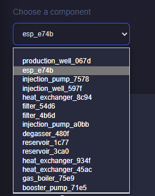
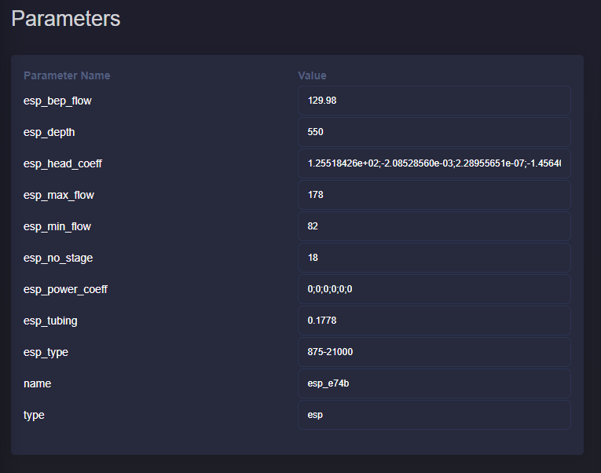
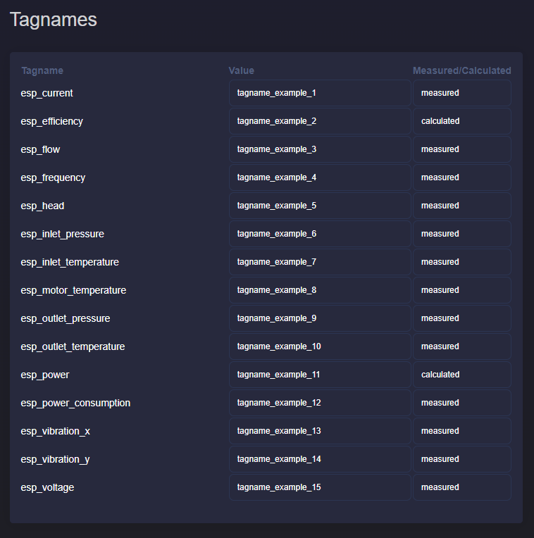

4.4. Parameters overview
4.4.1. Description
This application provides a consolidated view of component parameters and tagnames for the active project plant model.
4.4.2. Overview of parameters and tagnames
Select an asset from the dropdown list. The list is populated from the current project diagram. If no diagram exists, the dropdown remains empty.
{kind=link}

When an asset is selected, tables are updated automatically. If an asset has no custom name, GEMINI generates one from asset type and the first four ID characters.
{kind=link}

The parameter table shows parameter names and editable values. For array-based
fields such as esp_head_coeff or esp_power_coeff, separate values with
semicolons (;).
{kind=link}

The tagname table shows tag names, mapped values, and measured/calculated type. Like parameters, these fields are editable.
4.4.3. Modify parameters
Use this page both to review and to update parameters/tags.
{kind=link}
Click Update (bottom-left) to save changes. Save before switching to another asset to prevent losing edits.